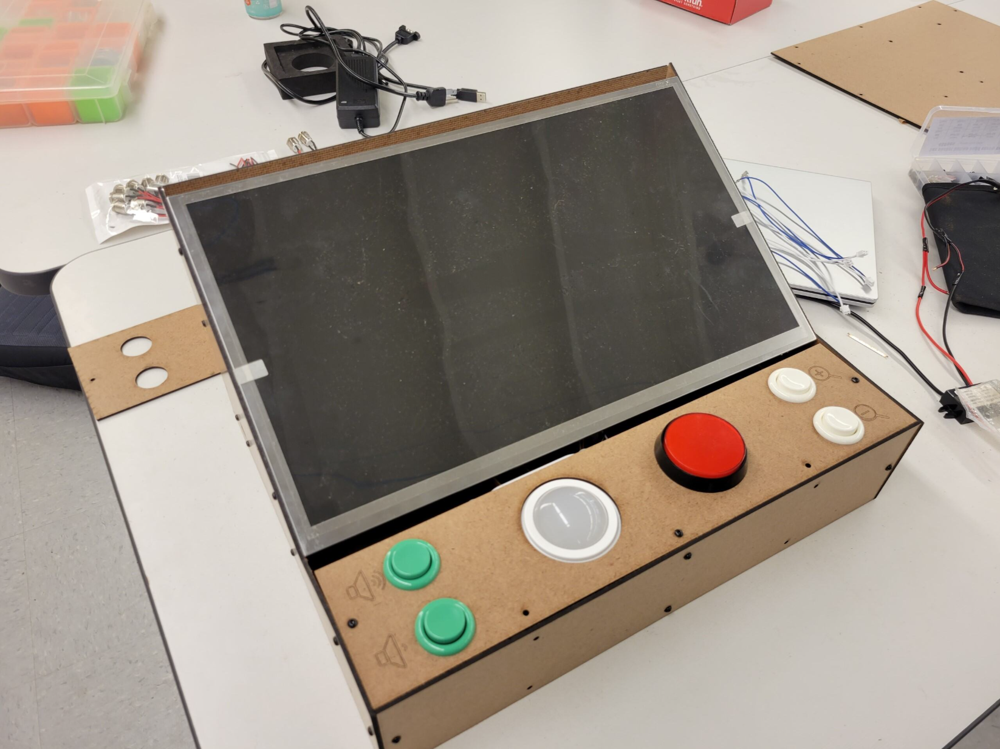

Full Work History

Photo taken by me
Cal Poly Capstone Project
- Project Manager: September 2024 to June 2025, Photo of final product above, Full design report here
Unit 221b
- Contracted Programmer (Internship): Summers of 2022, '23, and '24
Grand Avenue Deli
- Sandwich Artist: September 2020 to December 2021
Rite Aid
- Cashier: June 2019 to January 2020